7210A60 R.R. FRONT PILLAR
- Path
- Procedures > 72 PANELS AND FRAME > 7210 REMOVING REFITTING > 7210A STRUCTURAL ELEMENTS (FRONT PART) > 7210A60 R.R. FRONT PILLAR
- Kind
- repair procedure (removal / refitting; the operation number is the code)
- Applies to
- all engines; all production periods
- Interactive page
- https://sloeber94.github.io/elrnDB-aGt/en/#/125002026
Applies to: all engines; all production periods
 Removing
Removing
 Refitting
RefittingCheck if any of the connected parts are deformed by checking body alignment dimensions. Use appropriate measurement tools (reference rigs, templates or gauges).
Straighten the body if necessary.
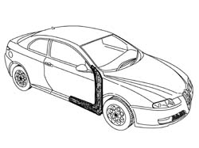
Applies to: all engines; all production periods
Remove the PVC treatment from the door sill pillar using a vibrating cutter and appropriate blade.
Use a rotary brush to clean the panel edges to reveal the weld spots.
1. Use an oxyacetylene torch and wire brush to remove the brazing in the area shown in the figure.
2. Undo bolts (2a) and remove front door hinges (2b).
3. Drill out the spot welds indicated and remove the door seal channel.
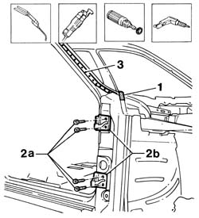
Applies to: all engines; all production periods
1. Use a circular saw to follow the dotted cutting lines shown in the figure.
2. Cross-sections of key areas as a guide to allow the operator to adjust cutting position and depth in order to avoid damage to the underlying panels.
3. Use a chamfering machine to remove the weld spots shown in the figure.
4. Use a drill to remove the weld spots shown in the figure.
5. Use a scalpel and mallet to remove spots ground previously and remove the pillar from the car.
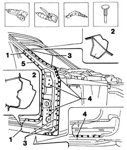
Applies to: all engines; all production periods
1. Use a chamfering machine to remove the weld spots shown in the figure.
2. Drill out the spot welds shown in the figure.
3. Use a scalpel and mallet to remove spots ground previously and remove pillar cut edges.
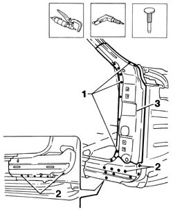
Applies to: all engines; all production periods
Straighten the body edges using a mallet and profiled stake.
Use a grinding wheel to remove the weld spot residues.
1. Apply the electric weld paint finish.
2. Drill holes at the ground points on the door sill reinforcement.
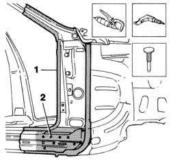
Applies to: all engines; all production periods
Cut the front pillar at the bench. Take care to leave a sufficiently wide steel edge to attach the new part to.
1. Make equidistant holes on the front pillar and door seal channel.
Use a rotary brush to remove the corrosion-proofing from around the inner and outer edge.
Apply electric weld paint finish to the edges in contact with the car.
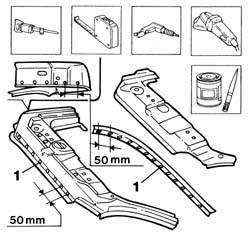
Applies to: all engines; all production periods
Refitting
Removing1. Position the pillar reinforcement on the car and secure using self-locking clips.
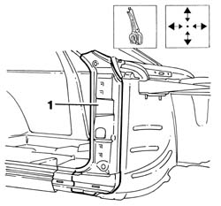
Applies to: all engines; all production periods
1. Position the front pillar on the car and secure using self-locking clips.
2. Use the hinge retaining nut as a reference point when locating the pillar.
3. Tack the parts on the car using Parker screws.
Remove the self-locking clips.
Remove the component locating screws.
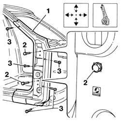
Applies to: all engines; all production periods
1. Refit the front door with its hinges.
2. Refit the front wing.
Use a gauge to check the windscreen seat diagonals and the alignment of the components.
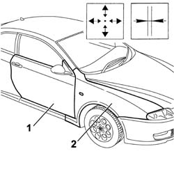
Applies to: all engines; all production periods
Remove the front door, door hinges and wing.
1. Use a circular saw to cut both panel sections in order to achieve a perfect joint line.
2. Remove any excess sheet steel.
3. Remove the parts.
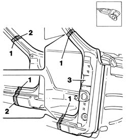
Applies to: all engines; all production periods
1. Use the holes made previously to position the pillar reinforcement to the car and secure.
2. Use a MIG welder to fill the holes made previously in the door sill reinforcement.
3. Use a spot welder to make a few spot welds around the edge of the part.
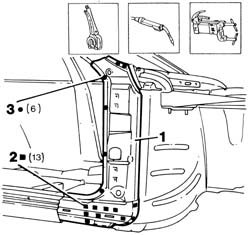
Applies to: all engines; all production periods
1. Position the front pillar and secure to the car.
Do up the door sill clips
2. Use a MIG welder to weld the holes made previously.
3. Use a MIG welder to seam weld the pillar and door sill edges.
4. Use a spot welder to weld the areas shown in the figure.
5. Apply hard solder between the pillar and windscreen surround.
6. Position the door seal channel.
7. Use a MIG welder to weld the holes made previously.
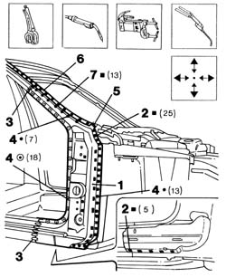
Applies to: all engines; all production periods
Correct any deformations in the panel using a profiled stake and mallet.
1. Use a grinding wheel to level the weld and remove.
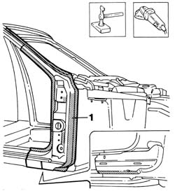
Applies to: all engines; all production periods
Apply rust-proofing to newly-welded areas.
Seal the joint lines between the part and the car.
Apply foam through the hole indicated in the figure.
Apply paint.
1. Apply wax oil inside the front pillar.
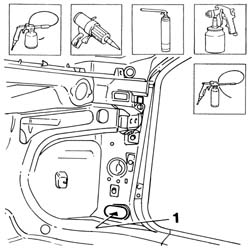